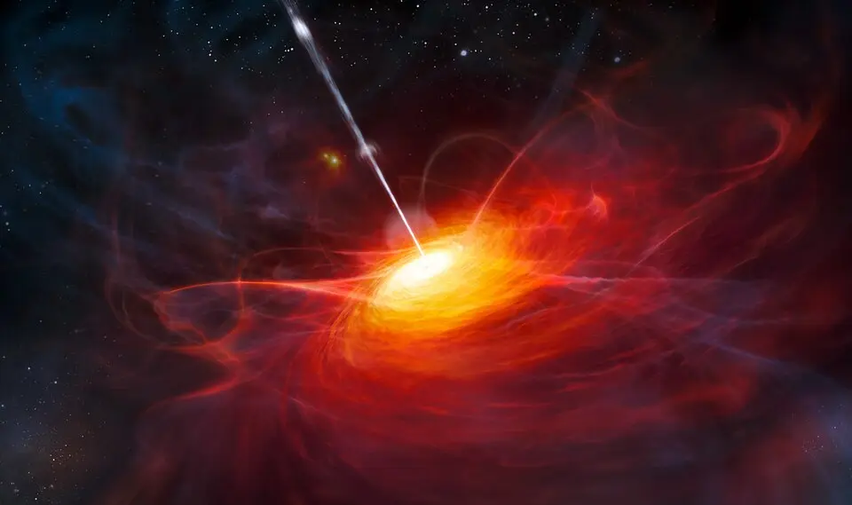
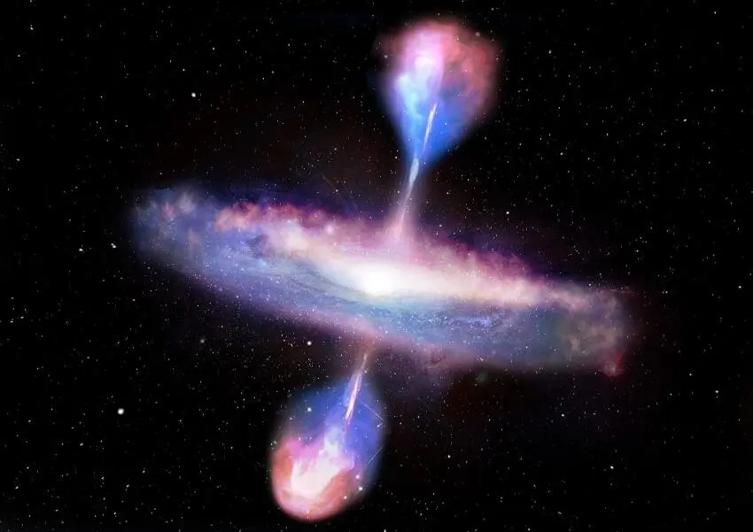

Accretion
Disk
Around a Quasar

How Quasars Work:
At the heart of every quasar there is a supermassive black hole with a mass that is millions to billions of times the mass of our sun.
The gas, dust and stars surrounding the supermassive black hole begins to get pulled into a swirling vortex called an accretion disk.
The intense heat and friction in the accretion disk heats up and glows brightly as it releases energy in the form of electromagnetic radiation.
As the black hole feeds on the accretion disk, a superheated plasma gets ejected at 99.9% the speed of light along the magnetic field lines of the black hole.
Quasar
SDSS
J1106+1939

Did You Know?
Quasar is short for "quasi-stellar (star-like) radio source" because they were discovered in the 1950s as sources of radio wave emissions of unknown origin.
A quasar can be a trillion times brighter than the Sun. If you placed a quasar at the distance of Pluto, it would instantly vaporize earths oceans.
A quasar is an object known as an Active Galactic Nucleus (AGN) which is a galaxy that has a tremendously bright core caused by the light radiated as matter falls into the supermassive black hole in the center. Quasars are the most powerful type of AGN.
Because quasars are incredibly far away, their light can take billions of years to reach us. This allows scientists to study the early universe as it was just a few hundred million years after the Big Bang.